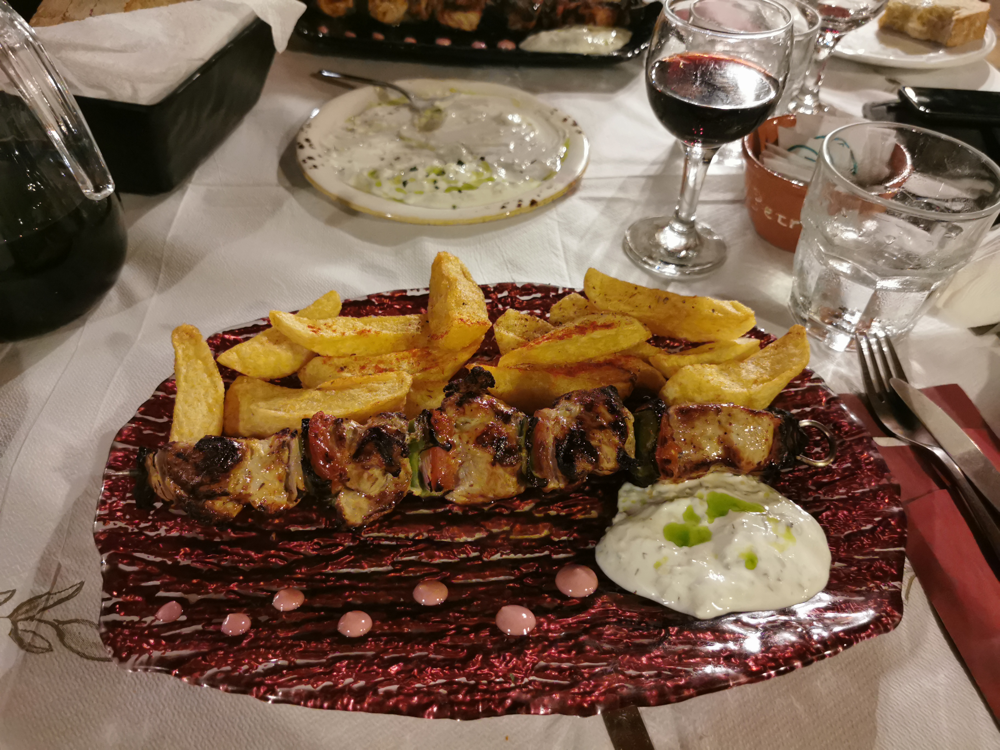
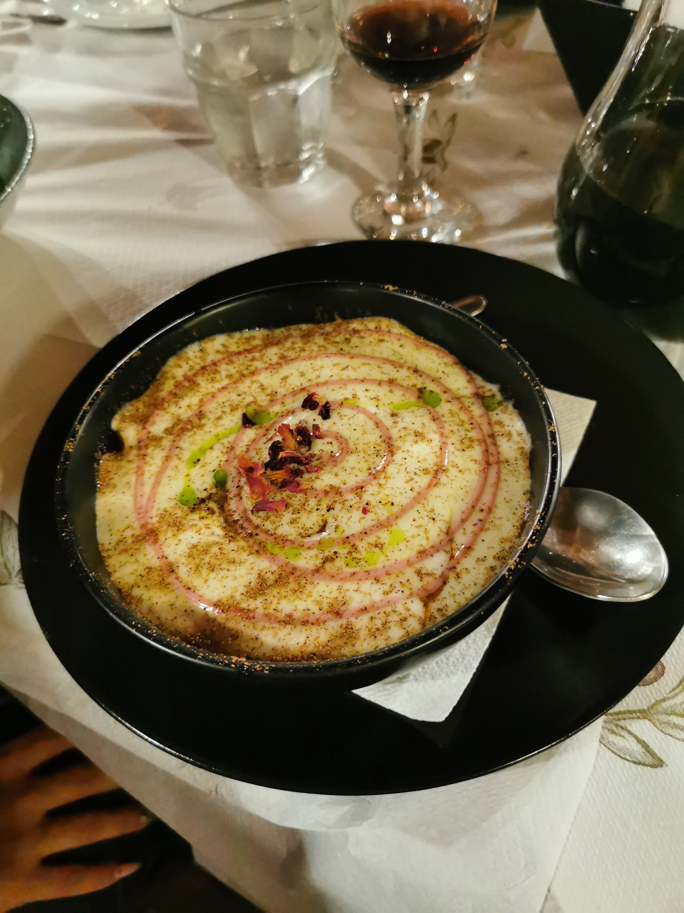
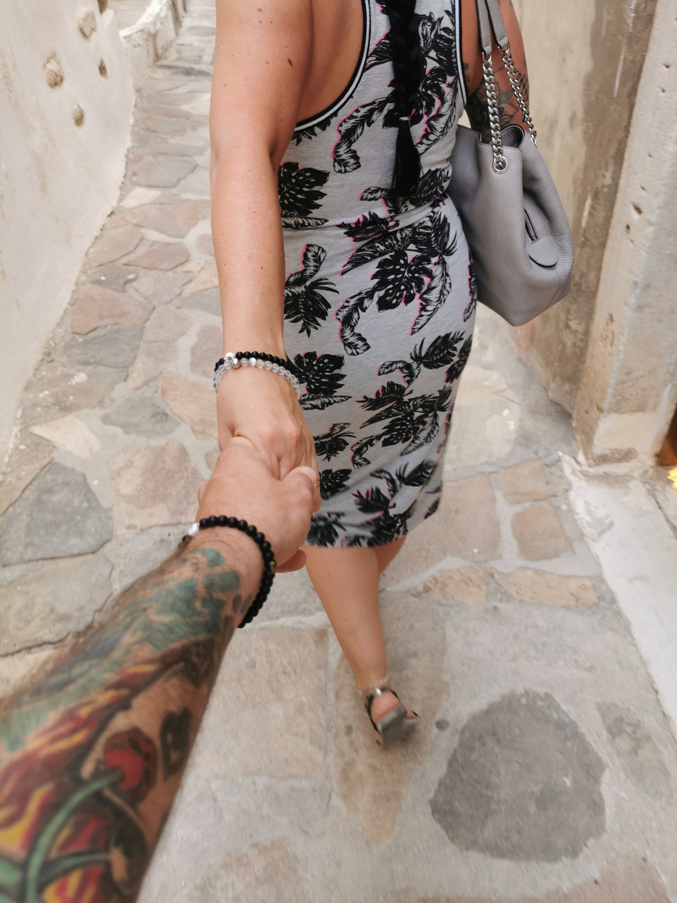
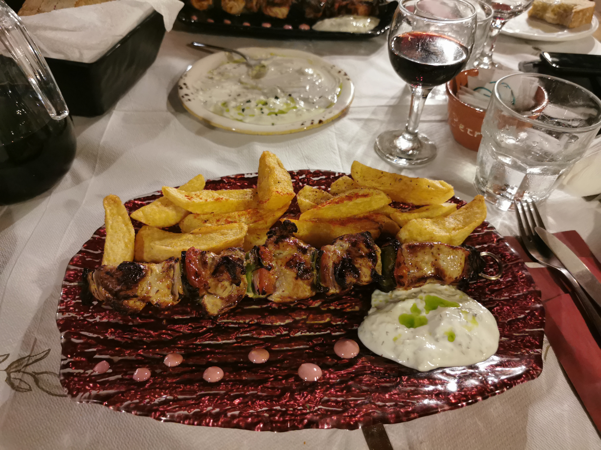
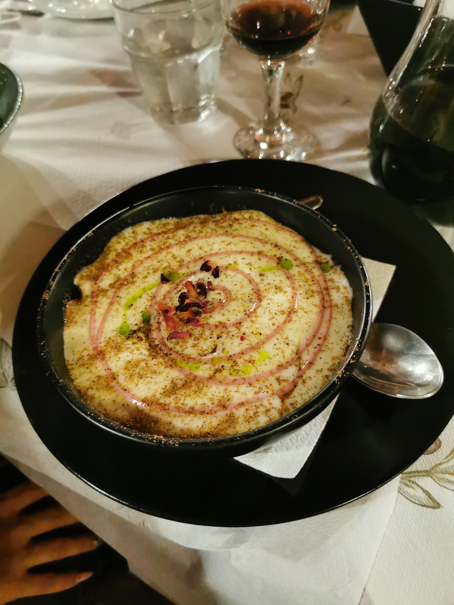
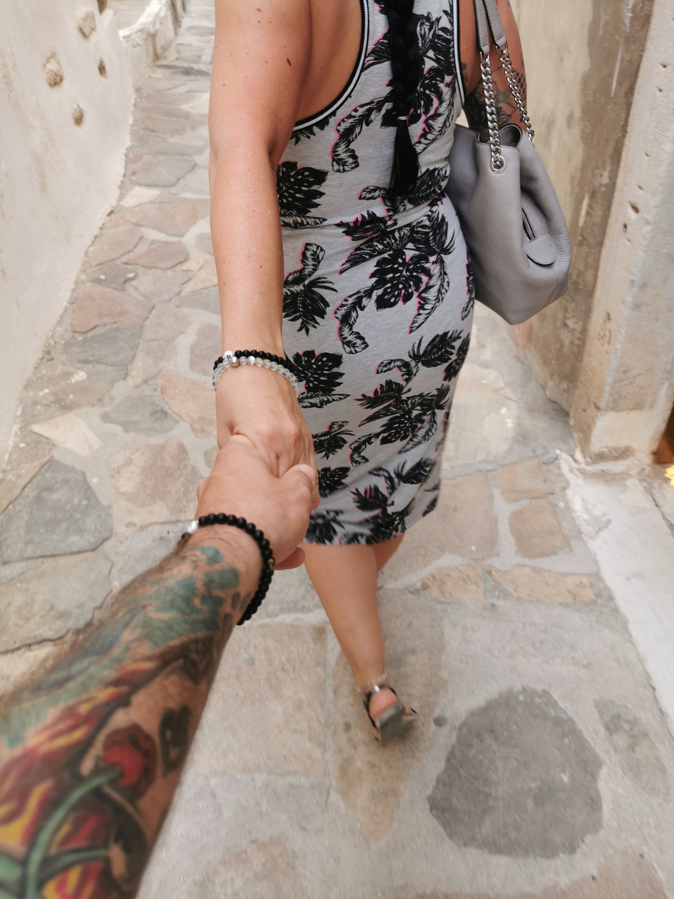

Der erste Urlaub gemeinsam mit Freunden. Und das mitten während der Coronazeit. Das hat uns aber nicht davon abgehalten, einen wunderschönen Urlaub auf der Insel Naxos zu machen. Mit kleinem Zwischenstop auf Santorini, der weißen Stadt von Reich und Schön. Unvergesslich unser kleiner Freund Michelangelos, die Geburtshöhle von Zeus, Strände wie auf Hawai und der Rollertour über die kleine Insel. Natürlich darf man auch die Küche nicht vergessen zu erwähnen. Alles in allem war es ein toller Ausbruch aus dem deutschen Coronawahnsinn.
 







© 2025 Der Betreiber dieser Webseite.
Alle auf dieser Webseite veröffentlichten Bilder und Inhalte sind urheberrechtlich geschützt und dürfen ohne
schriftliche Genehmigung nicht kopiert oder weiterverbreitet werden.